28 Juni 2025
Pertemuan Pertama di Gunung Ungaran ⛰️
Titik awal kita ketemu. Siapa sangka dari pendakian ini, cerita kita berdua dimulai.
<
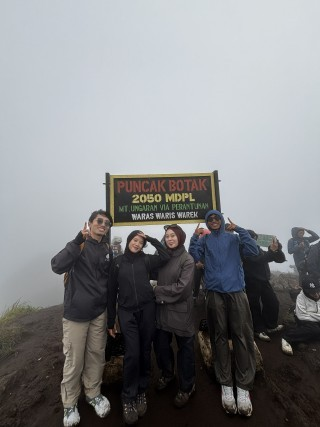
22 Juli 2025
First Video Call! 📱
Momen pertama kali kita VC. Deg-degan, salting, tapi bikin senyum-senyum sendiri! dan yang ngajak babee lohhhh
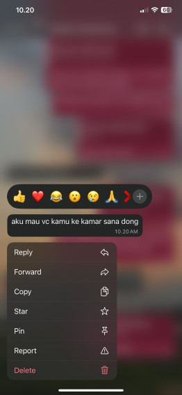
27 Juli 2025
Nyamperin "Adik Kecil" ke Posko KKN 🛵
Nekat nyamperin kamu ke posko KKN dan lanjut jalan-jalan ke Magelang. Inget kan dulu aku masih panggil babee dengan sebutan "adik kecill"? 🤭
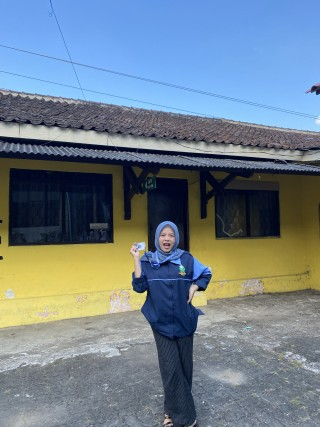
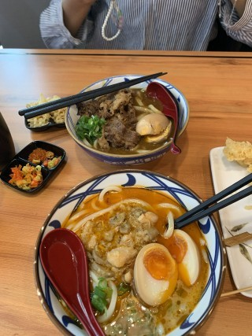
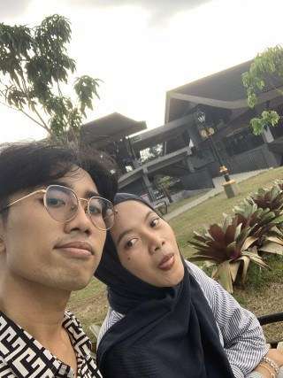
2 Agustus 2025
Our First Date di Tungkubumi 🍽️
Menurutku, ini adalah first date beneran kita. Momen manis yang bikin kodok makin yakin sama paus.
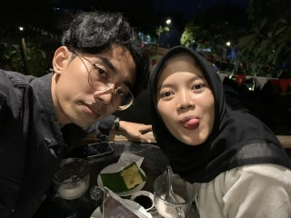
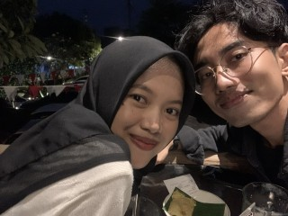
18 Agustus 2025
Officially Yours di Saloka 🎡
Akhirnya jadian! Perjalanan ke Saloka yang jadi saksi bisu. Coba liat deh perbandingan muka kita sebelum dan sesudah resmi jadian 😆.
Before Jadian
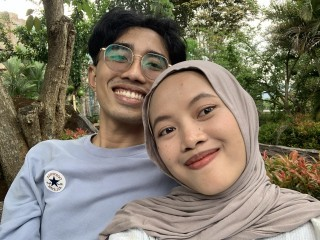
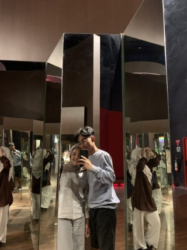
After Jadian (Full Senyum!)
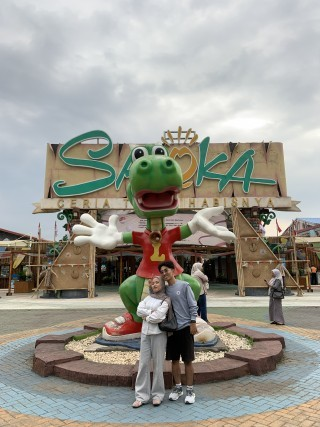
24 Agustus 2025
Our First Photobox 📷
First photobox banget nih 😚. Ini seminggu setelah kita jadian btw, terus abis itu kita ke rumah babee.


14 September 2025
Ungaran againn
Kita muncak lagi ke ungaran buat kedua kalinya, tapi sekarang sebagai pasangann
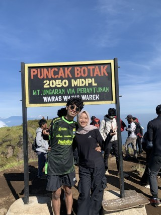
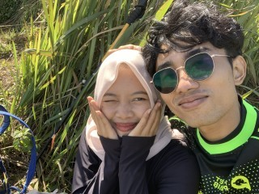
28 September 2025
Last day ketemu sebelum kita LDR karena babee magang ke solooo 😢
1 Bulan jadian, kita harus LDR karena Babeee magang di soloo, so sad 😭
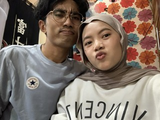
31 Mei 2026
Muncak ke Kembangg
Gunung kedua yang kita dakiiii
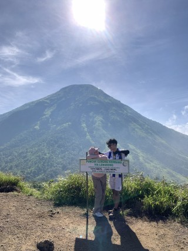
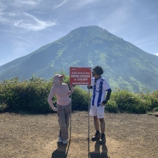